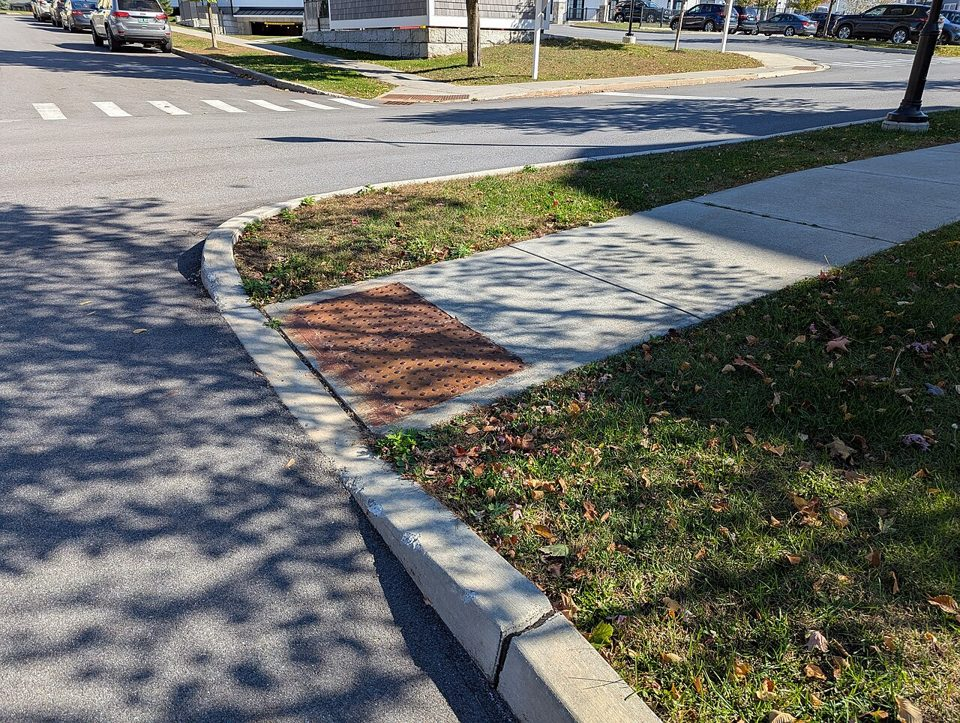
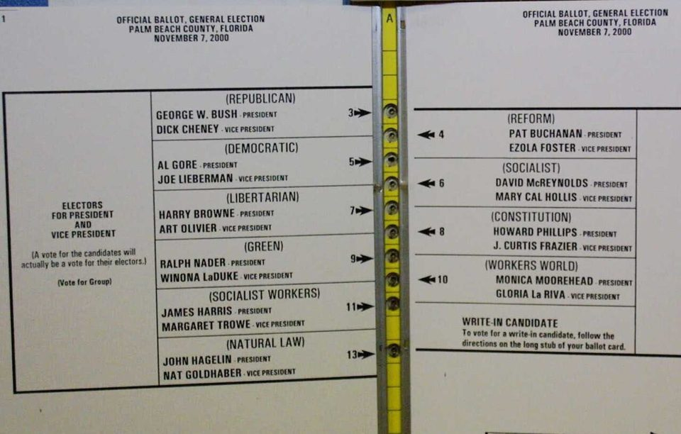
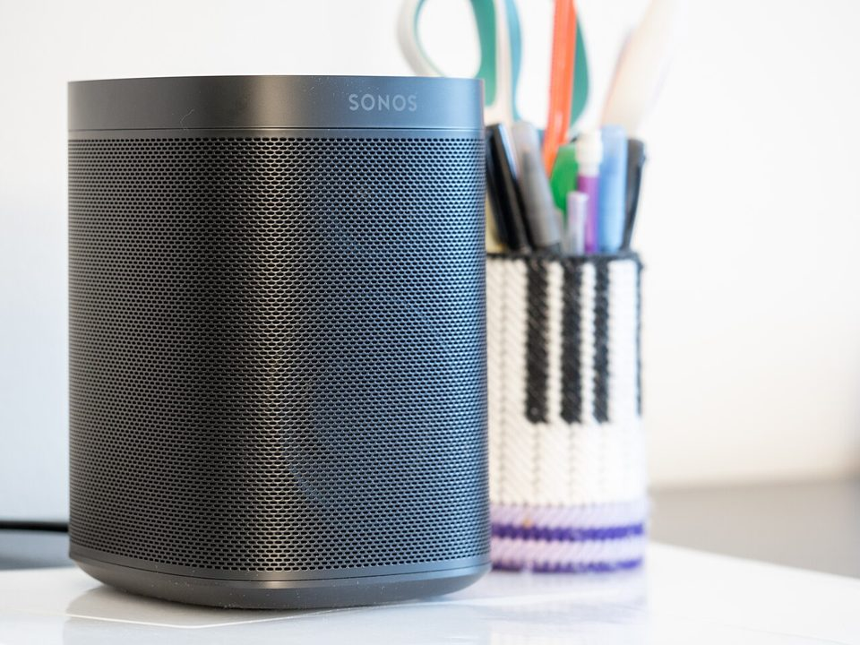

Chapter 11 · Software Design and Selection
Software: The Pizza You Could Not Order
Guillermo Robles is blind and uses software that reads a screen aloud. At least twice he tried to order a pizza from Domino's, on the website and in the app, and could not, because neither had been built to work with a screen reader. He sued, and the case reached the door of the Supreme Court. This chapter is about the two software decisions every business makes: how it is designed and how it is chosen. It is also about why the interface is the part of the system that decides who gets to be a customer.
Wanna go analog?or save it as a PDF; the navigation drops out
Every business that sells online has a front door made of software. This chapter is about who can walk through it, how businesses choose the software that builds it, and what happened when one famous company's door stayed shut to a blind customer for six years.
By the end of this chapter you should be able to:
- Distinguish system software from application software, and explain where business software comes from.
- Explain usability and accessibility, and why the interface decides who gets to be a customer.
- Apply the build, buy, or subscribe decision using the differentiator test and total cost of ownership.
- Describe a professional software selection process, from requirements to pilot.
- Explain why the ADA reached the web in Robles v. Domino's, and what the ruling now binds.
1Software, and the interface that decides who gets in
Think of the last app that made you give up halfway through a task. Maybe a checkout page kept rejecting your address, or a form erased everything when you hit the back button. The system behind it probably worked fine. You just could not get through the front of it. This chapter is about that front, and about who gets through it.
Every chapter so far has treated software as one of five components, the one that holds the rules. This chapter looks at it from the only angle a customer ever sees: the surface where a person meets the system. That surface is where the software component touches the people component, and it is where most of a system's value is delivered or lost. Two decisions follow, and both belong to managers rather than programmers: how software is designed, and how it is chosen.
1.1 Kinds of software, and where it comes from
Start with the plain inventory. Software comes in two broad kinds:
- System software runs the machine itself. For example, the operating system on your laptop or phone.
- Application software does the business's actual work. For example, a cash register, a payroll system, or a pizza-ordering app.
A business can get application software in three ways:
- Custom software is built for you. It fits exactly and costs the most to create and keep running. For example, a company's own ordering app.
- Packaged software, also called off-the-shelf, is bought and installed. It is cheaper and fits approximately, which is why Chapter 8 spent a whole case on configuring versus customizing it. For example, an accounting program installed on the company's own computers.
- Software as a service (SaaS) is rented. It runs on the vendor's computers, you reach it through a browser, and you pay a subscription. For example, Gmail or Canvas. Most new business software today is SaaS.
Keep one fact in mind for the main case. Domino's ordering system sits at the expensive end: custom software, built and owned by Domino's, because Chapter 4 showed that the ordering pipeline is the business. Whatever gaps it had were gaps in the company's own design decisions.
1.2 The interface decides who gets in
For the first decades of computing, the interface was a command line: a blinking cursor waiting for typed instructions in a syntax you had to already know. The people who could use a computer were, in effect, the people willing to memorize it. The graphical interface, with windows, menus, and a mouse, did not make computers more powerful. It made them usable by more people, and the personal computer industry grew out of that. Hold it as a principle: every interface decision is a decision about who is in your market.
Usability is how easily people can use an interface to do what they came to do. It is not a matter of taste. It has properties you can measure by watching real people try real tasks:
- Learnability: how quickly a new user can do the core task. For example, can a first-time customer order a pizza without help?
- Efficiency: how fast the task is once learned. For example, how many taps a repeat order takes.
- Error tolerance: how easily people make mistakes, and how gracefully they recover. For example, whether a wrong tap can be undone or empties the whole cart.
The business stakes add up quietly. A confusing checkout loses customers one abandoned cart at a time. Inside a company, hard-to-use software taxes every employee every day, a cost that never appears on the invoice for the system that causes it. One of this book's authors studied nurses using electronic medical records and found that the same system produced two kinds of stress. The good kind came when a demanding tool felt useful and somebody helped people learn it. The bad kind came when it felt imposed and pointless, and it predicted wanting to leave the job.1 Usability is the difference between the two.
1.3 Accessibility is not a feature request
Usability asks whether a typical user can do the task. Accessibility asks the harder version: whether every user can, including people with disabilities the builders never pictured. That includes blind users who rely on a screen reader, software that reads the screen aloud; deaf users who need captions; and people who use a keyboard or voice because they cannot use a mouse.
The working standard is the Web Content Accessibility Guidelines (WCAG), published free by the World Wide Web Consortium, the group that sets web standards.2 They are organized around four properties:
- Perceivable: people can take in the content. For example, images have text descriptions a screen reader can speak.
- Operable: people can use the controls. For example, every button works from the keyboard, not just with a mouse.
- Understandable: people can follow it. For example, error messages say what went wrong in plain words.
- Robust: it works with the tools people bring. For example, a screen reader can tell what each control is.
Two facts turn accessibility from charity into strategy. The first is scale: the World Health Organization estimates that about 1.3 billion people, roughly one in six, live with a significant disability, a market no business would knowingly lock out.3 The second is the curb-cut effect: features built for disability keep turning out to serve everyone.

Photograph: Ezekielf, via Wikimedia Commons, CC0 (public domain dedication).
Accessible design is, reliably, just better design. And building it in from the start costs a fraction of fixing it later under a court order, which brings us to the pizza.
2How businesses choose software
Design is one software decision a business makes. Selection is the other, and by far the more common, because most companies buy far more software than they build. Done badly, it produces the systems everyone hates, and Chapter 8 showed you the hundred-million-dollar version. The professional process is unglamorous and learnable.
2.1 The selection process
Nobody is born knowing how to buy software, and most managers never get taught. Here is the process:
- Write the requirements first. List what the software must do before you see any vendor demo, and split the list into must-haves and nice-to-haves. Otherwise a good demo will write your requirements for you. Many organizations send the list to vendors as a formal request for proposal (RFP).
- Run scripted demos. Every vendor on the shortlist performs your tasks on your sample data, not their rehearsed best case. For example, a grocery co-op makes each vendor process a member discount on a real receipt.
- Work out the total cost of ownership (TCO). The license or subscription is often the smaller part. Add setup, connecting it to other systems, training, support, and the cost of leaving later.
- Check references and run a pilot. Talk to companies your size that use it, then let real users try it on real work before you sign.
After this chapter, one line belongs in every requirements list: the software must meet WCAG, checked in the demo with a screen reader running. Section 4 shows what that line is worth.
2.2 Build, buy, or subscribe
The strategic part of selection is the oldest question in corporate IT: build it, buy it, or rent it? The working rule comes straight from Chapter 3:
- If the capability is a commodity, something every business does the same way, such as payroll, email, or accounting, buy or subscribe. Building it yourself buys no advantage and all the upkeep.
- If the capability is your differentiator, the thing customers choose you for, owning it can be worth the cost. That is why Domino's built its own ordering system.
The judgment call is knowing which is which. The test is simple to say: would doing this better than rivals actually change what customers do?
Five software needs at the Cascadia co-op. Decide what it should do about each one before you check.
Ask two questions. Is this the thing customers choose us for? If yes, owning it can be worth the cost. If no, is it standard enough that a rented version exists? Subscribe if it is; buy a license if you need it on your own machines.
3Two interfaces that decided the outcome
Before the main case, here are two short ones. In each, the system underneath worked exactly as built, and the interface decided the outcome anyway.
3.1 Mini-case 1 · 2000: the ballot that was hard to read
In the 2000 U.S. presidential election, Palm Beach County, Florida, used a punch-card ballot that listed candidates on two facing pages, with one column of punch holes running down the middle. The county's election supervisor designed it that way so she could print the ten candidates' names in larger type for older voters.4

Public domain, via Wikimedia Commons.
The result was 3,407 votes for a minor candidate, Pat Buchanan, whose hole sat between the two front-runners'. That was several times what he received in comparable counties. More than 19,000 other ballots were punched twice and thrown out.4 The election was decided in Florida by 537 votes. The voting machines counted correctly. The interface, a piece of card and a row of holes, determined what people were able to express, and no test of the counting system would ever have caught it.
What decided the outcome: the layout. The component: hardware. This is the purest version of section 1's claim that every interface decision is a decision about who is in your market. Here the market was an electorate.
Show the answer
Usability, and specifically the property section 1.2 calls error tolerance. Larger type made each name easier to read, which is one usability goal. But the layout that larger type forced, names on two facing pages with one column of punch holes between them, made it easy to punch the wrong hole, which defeats the other. The ballot passed the test the designer ran (can you read it?) and failed the test she did not run (can you vote for who you meant to?). That is the general lesson: a design decision made to help one property can quietly break another, and the only way to know is to watch real people use the thing before it counts.
3.2 Mini-case 2 · 2024: the app that made the speakers stop working
One morning in May 2024, people who owned expensive speakers found that their alarms had not gone off, their sleep timers were gone, and in some cases the speakers would not respond at all. Nothing in the hardware had changed. Sonos makes wireless speakers that are controlled almost entirely through its app, and it had just released a rebuilt version, timed to the launch of its first headphones. The new app was missing features customers used every day.5

Photograph: Ajay Suresh, via Wikimedia Commons, CC BY 2.0.
For blind customers it was worse. Before launch, a Sonos staff member had assured users on the company's own forum that the new app had been tested with VoiceOver, the iPhone's screen reader. On launch day the National Federation of the Blind publicly called the app a significant accessibility regression.6
The costs mounted. In August the company said fixing the app would cost $20 million to $30 million, and it cut about 6 percent of its staff. In October it said it would appoint a “quality ombudsperson” to give employees a direct line to raise problems. Its chief executive later blamed too little testing and releasing too many changes at once, which he called a “big bang” rollout, the same term you met in Chapter 8.7 Sales fell 16 percent in one quarter, and in January 2025 the chief executive stepped down.7
What decided the outcome: a launch date. The component: people. The app shipped when the headphones were ready rather than when the app was, and that was a decision made by named executives. Notice that accessibility was among the first things to break, which is the pattern section 1 describes, and the one the main case turned into a lawsuit.
Show the answer
Sonos said it had tested the app with VoiceOver, and it shipped anyway, so the gap was not whether testing happened but what the tests asked. A scripted demo built on section 2's rule, real customers doing their real tasks, would have looked different. A blind user would set an alarm, change the volume in one room, and start a playlist, start to finish, with the screen reader on. That would have failed on day one. A company that knew this might still keep the launch date because the headphones were ready and the date was public, and nobody had the authority, or the requirement in writing, to say that accessibility was a reason to wait. A test suite is only as complete as the list of people, and tasks, the product is for.
3.3 What the two have in common
A ballot and a mobile app. In both, the system underneath was correct: the votes were counted accurately, and the speakers played. In both, the interface decided what people could actually do, which is the only thing they experience.
Hold the second one close for the main case, because it is the same failure at a different scale. Sonos broke screen-reader support and lost a chief executive. Domino's never built it in, and ended up at the door of the Supreme Court.
4Main case · Robles v. Domino's: the ADA meets the web
Picture trying to order a pizza with your eyes closed, using only a voice that reads the screen to you. The voice says “button.” Then “button.” Then “button” again. You have no idea which one adds pepperoni and which one empties your cart. That is roughly what Guillermo Robles met when he tried to order from Domino's, more than once, starting in July 2015.8
Domino's, the company from Chapter 4, had rebuilt itself as a technology company that happens to sell pizza, and by the mid-2010s a large share of its orders came through its website and app. That was the front door, and for Mr. Robles it was closed. In September 2016 he sued under the Americans with Disabilities Act (ADA), the 1990 federal law that bars businesses open to the public from shutting out people with disabilities.8
Domino's defense is worth stating fairly, because your discussion questions will ask you to weigh it. The company made three arguments. The ADA, a law about physical places, does not reach websites and apps. No federal regulation said what an accessible website even is. And Mr. Robles was not shut out, because he could always phone. A federal appeals court answered each one, and the answers now shape how every business with a website gets advised.
4.1 What the software actually did to him
Start with the mechanics, because the whole case turns on them and they are not complicated. Mr. Robles used JAWS, the most widely used screen reader on Windows, and VoiceOver, the screen reader built into the iPhone. Both work the same way. They do not look at the picture on the screen the way you do. They read the labels and structure underneath it, and then speak them.
So a button works if somebody wrote a label on it. An image means something if somebody wrote alt text for it. A form field can be filled in if somebody connected the label to the box. When those labels are missing, the screen reader has nothing to say. It does not announce "this site is broken." It announces "button," or nothing, over and over, while the user tries to guess what the page contains.
That is what Domino's site and app did. The website's images lacked alt text. The app had buttons with no labels, which is a failure against Apple's own published guidance for iOS developers. Mr. Robles tried more than once, and he could not build his pizza and finish the order. He also could not claim a discount that existed only online, which matters legally as well as practically: the company was offering something to its digital customers that it was not offering to him.
Keep hold of what the fix would have been. Nobody was asking Domino's to build a separate site for blind customers, or to invent anything. The remedy is to label the controls and describe the images in the software the company already had. That is the accessibility line section 2.1 puts in every requirements list, and it is cheapest when it is part of how the team builds, rather than a project somebody funds later under a court order.
4.2 Three defenses, and what happened to each
Domino's made three arguments, and each one is a version of something you will hear in a real meeting. Take them one at a time.
"The law does not cover this." The ADA is a 1990 statute about places of public accommodation, and Domino's argued that a website is not a place. The Ninth Circuit answered with what lawyers call a nexus: the website and app connect customers to the goods and services of physical restaurants, of which Domino's had thousands, so Title III reaches them. Note the reasoning, because it generalizes past this case. Courts read a statute by what it was for, not by the technology that existed when it was written.
"Nobody told us what the rules are." This was the strongest argument, and the district court accepted it at first. There were no federal regulations defining an accessible commercial website, so, Domino's said, holding the company to an unwritten standard would violate due process. The appeals court rejected it, and the reasoning is worth keeping. The obligation in the statute is to communicate effectively with disabled customers. That obligation is the notice. A court can then order compliance with WCAG as the remedy for breaking it, without WCAG ever having been turned into a federal rule.
"He could have phoned us." Domino's argued that a telephone line meant Mr. Robles was not excluded. On the evidence in front of it, the district court did not accept that the phone was an adequate substitute. Think about what the argument actually asks. Everyone else may order at two in the morning, in thirty seconds, with the online-only price. You may call, wait, and pay more. An alternative channel is only equivalent if it delivers the same thing on the same terms, and the company's own pricing had already conceded that it did not.
The pattern across all three is the one to carry into your career. Each defense was a reason the company should not have to do the work, and none of them was a claim that the work was hard.
4.3 The ruling, and what it now binds
The district court initially sided with Domino's on procedure, reasoning that without federal web-accessibility regulations, courts should wait for the Department of Justice to define the rules. In January 2019 the Ninth Circuit Court of Appeals reversed, and its two holdings are the ones that matter. First: Title III of the ADA applies to the websites and apps of a business where they connect customers to the goods and services of its physical locations. Domino's, with thousands of stores, plainly had that connection, which the court calls a nexus. The court put it directly: the website and app facilitate access to the goods and services of a place of public accommodation. Second: the absence of formal regulations is not a due-process escape hatch; the statute's obligation to communicate effectively with disabled customers was itself fair notice. In October 2019 the Supreme Court declined to hear Domino's appeal, leaving the ruling standing.9
Notice the shape of the legal lesson, because you have seen it before. Federal regulators took the same position on AI hiring tools in 2023, which Chapter 12 returns to: existing discrimination law applies no matter how novel the technology. Here, a 1990 statute written before the web reached the web anyway, because courts read laws by their purpose, not by the technology of their era. "There are no rules for this yet" is one of the most expensive sentences in business. The practical standard companies are now held to is the WCAG guidance that was freely available the whole time, and the cheapest moment to meet it was before the lawsuit.
The interface is a legal surface. Domino's learned it from a pizza order; every business with a website inherited the lesson.
4.4 Six years, and what the record actually shows
Follow the calendar. Mr. Robles filed in September 2016. In March 2017 the district court set the case aside to wait for federal regulators. The Ninth Circuit reversed in January 2019. The Supreme Court declined to take the appeal in October 2019. In June 2021, back at the district court, the judge granted summary judgment for Mr. Robles on the website, ordered Domino's to bring it into line with WCAG, and awarded him $4,000 in statutory damages under California's civil rights act. It did not rule on the app. The parties settled in June 2022, on undisclosed terms.8 Six years of litigation, over an order for a pizza.
Now a caution about a number you will meet the moment you search for this case. Many articles state that fixing the website would have cost Domino's about $38,000, usually next to an estimate of millions spent on lawyers. That comparison is irresistible and you should not use it, because the figure does not appear in the court record. It seems to have entered circulation through a single 2019 social media post and has been repeated ever since without a source. Domino's litigation spending, its remediation cost and the settlement amount are all undisclosed. The only dollar figure the public record establishes is the $4,000.
That is worth a moment in a course about information. The argument for accessibility does not need an invented number, and using one hands the other side an easy way to dismiss the whole point. What the record does establish is strong enough: a company spent six years and an undisclosed amount of legal effort defending its right not to label its buttons, and was ordered to label them anyway.
4.5 The five components at Domino's, again
Now that you have seen the whole system, here it is as five components, the way this course maps every case. Compare it with the Chapter 4 table for the same company. The rows are the same; the question asked of them is different.
| Component | In the case | The lesson |
|---|---|---|
| Hardware | His phone and computer, standard equipment running assistive software | The barrier was never the device |
| Software | A custom-built site and app without the labels a screen reader needs | Design decisions are market decisions, and legal ones |
| Data | Menus, prices, and online-only coupons he could not reach | Information a customer cannot perceive may as well not exist |
| Networks | The web, which a 1990 statute reached anyway | New channels inherit old obligations |
| People | Builders who never tested with a screen reader; a customer who sued | The users you do not picture will find you eventually |
4.6 What's next: since the ruling
The Ninth Circuit's decision stood, and web-accessibility lawsuits in the United States have run to thousands a year since. More than 3,000 were filed in federal court against businesses in 2025 alone, many of them against small businesses that never imagined their website was a legal surface.10
The law has moved too, though unevenly:
- Government websites. In 2024 the Department of Justice issued a rule requiring state and local government websites and apps, including public universities like this one, to meet WCAG 2.1. Four days before the first deadline in April 2026, it pushed the dates back a year, to April 2027 for large entities and April 2028 for smaller ones. The standard itself did not change.11
- The challenge to the delay. In May 2026 the National Federation of the Blind sued to undo the extension. As of October 2026 the court had not ruled.11
- Europe. In June 2025 the European Accessibility Act began applying to many private-sector products and services, including websites, apps, and self-service machines.
And Sonos shows the market's version of the same lesson. A company that went backwards on accessibility in 2024 lost customers, revenue, and a chief executive without any lawsuit at all. The direction is not in doubt, even where deadlines slip. What was arguable in 2016 is settled in 2026: the cheapest moment to meet the standard is before anybody has to ask.
4.7 What a business technology manager takes from this case
Strip the Robles case down to what you can reuse in any company. Four decisions came up in it, and each one is a decision you will be in the room for.
The interface is the system, as far as the customer and the court are concerned. The Palm Beach machines counted votes correctly, the Sonos speakers played music correctly, and Domino's systems took orders correctly, and in every one the interface decided who could actually use it. When you review a system, review it from the outside, as the person who has to use it, because that is the only part they will ever see.
Write accessibility down as a requirement, not a feature. Sonos said its app had been tested with a screen reader and still shipped one blind users could barely operate, because full screen-reader support was never treated as a release requirement. A feature can be dropped in a sprint. A requirement has an owner and a test. Which one accessibility is at your company is a decision, and after Robles it is a legal one.
Whether you build, buy, or subscribe, you answer for what customers see. Domino's built its own ordering system, so the gap was its own. But buying would not have shifted the duty: the company that puts software in front of customers answers for what it does, whoever wrote the code. That is why the accessibility line belongs in every requirements list and every vendor demo.
Ask who the system forgets. Every one of the cases in this chapter is about a user the designers never pictured: a voter who could not follow the layout, a blind customer, an employee stuck with the tools the company chose. That question costs nothing to ask before launch and a great deal to answer after, and it is the manager's question, because the developers are building what they were told.
5The downside: who software forgets
Robles is the visible case of a quiet, general pattern: software forgets the users its builders did not picture. Disabled users are the sharpest example, but the circle is wider. Older users meet interfaces tuned to reflexes trained by two decades of apps they never used. Low-income users meet sites built and tested on new phones over fast connections. Non-native speakers meet error messages written in idiom. None of this is malice; it is the default outcome of teams building for themselves, which is why deliberate practices, accessibility standards, usability testing with people unlike the builders, exist at all.
And one forgotten user lives inside the company itself: the employee. The person who selects enterprise software is almost never the person who will use it eight hours a day, and the gap shows. The warehouse worker fighting a fifteen-click process, the nurse clicking through screens designed by a billing department, pay daily for a selection decision they were never consulted on. Section 2's pilot step exists precisely to close that gap. The best single question to ask about any software purchase is the one this chapter has been circling: who was in the room when this was chosen, and who has to live with it?
- The interface is the part of the system that decides who gets to be a customer. Everything behind it can work and the front door can still be closed.
- Accessibility is usability's widest circle, and the WCAG guidance was freely available the whole time Domino's argued there were no rules.
- Build your differentiator; buy or subscribe to your commodities. Custom-building a commodity buys you no advantage and all the maintenance.
- Write the requirements before the demo, or the demo will write them for you. Then pilot with real users doing real tasks.
- "There are no rules for this yet" is one of the most expensive sentences in business. The law caught up, unevenly, and the private suits never paused.
6Vocabulary
- System vs. application software
- What runs the machine vs. what does the business's work.
- Custom / packaged / SaaS
- Built for you, bought off the shelf, or rented by subscription on the vendor's computers.
- Usability
- Measurable properties of an interface: learnability, efficiency, error tolerance.
- Accessibility
- Design that works for people with disabilities; usability's widest circle.
- Screen reader
- Assistive software that speaks an interface aloud, if the interface was built with the structure it needs.
- WCAG
- The Web Content Accessibility Guidelines: perceivable, operable, understandable, robust; the working legal standard.
- Curb-cut effect
- Features built for disability that end up serving everyone.
- Public accommodation nexus
- The Ninth Circuit's rule: the ADA reaches a site or app that connects customers to a physical business's goods and services.
- Requirements / RFP
- What the software must do, written down before any vendor demo can write it for you.
- Scripted demo
- Vendors performing your tasks on your data, not their rehearsed path.
- Total cost of ownership
- License plus implementation, integration, training, support, and the cost of leaving.
- Build vs. buy vs. subscribe
- Own your differentiator; rent your commodities.
Two good uses this week. Have an AI play the vendor: give it a system you have had to use at work or school and run a mock scripted demo, pressing it on integration and accessibility until it squirms. And draft your own requirements list first, then ask an AI what you missed. Its additions will be generic, and deciding which generic requirements actually apply to a member co-op is exactly the selection judgment this chapter is teaching.
7Discussion questions
None of these get handed in. On Wednesday you run the discussion and I steer it, which means the class is only as good as what you walk in with. Read the chapter, pick the question you have the strongest opinion about, and be ready to say it first.
- Domino's made three arguments: the ADA is about physical places, there were no regulations to follow, and Mr. Robles could have phoned. Take the strongest of the three and make its best case, then explain what the court said and whether you find it convincing. Analyze
- Pick an app you use daily and score it on the three usability properties from section 1, with a number and a reason for each. Then say what it would take to score it with a screen reader, and whether you think anyone at the company has. Apply
- Sonos removed screen-reader support and shipped; Domino's never added it. One lost a chief executive to the market, the other lost in court. Explain why a company with a testing process still ships an interface that fails some of its users, and name the decision that would have to change. Systems
- Write the accessibility line for Cascadia's next software requirements document, and describe exactly how you would verify it in a vendor demo. Then say what you would do if the best system on every other criterion failed that line. Apply
- "There are no rules for this yet" was Domino's defense in 2016 and it lost. Is it reasonable to hold a business to a standard that no regulator had written down? Argue one side, state the strongest objection, and say what the answer implies for the next technology that arrives before its rules do. Ethics
8From lecture to lab
This chapter says usability is a set of measurable properties and accessibility is its widest circle. This week's lab hands you the instrument professionals use to measure them: the ten usability heuristics. You will learn all ten, go deep on three, find each one working or failing in a real interface, and write the short evaluation report a UX designer produces on the first day of a project.
Keep mini-case 2 beside you while you do it. Sonos had a testing process. The question is not whether you tested but who you tested with, doing what, and whether anybody had the authority to say the launch date moves.
9Sources and further reading
- 1 Christopher B. Califf, Saonee Sarker and Suprateek Sarker, “The Bright and Dark Sides of Technostress: A Mixed-Methods Study Involving Healthcare IT,” MIS Quarterly 44(2), 2020, pp. 809–856, for the two kinds of technology stress. Section 1.2.
- 2 World Wide Web Consortium, Web Accessibility Initiative, accessibility overview and the Web Content Accessibility Guidelines, for the four principles. The guidelines are readable and worth an hour. Section 1.3.
- 3 World Health Organization, Disability fact sheet and Global Report on Health Equity for Persons with Disabilities (2022), for about 1.3 billion people, roughly one in six, living with significant disability. Section 1.3.
- 4 Jonathan N. Wand and others, “The Butterfly Did It: The Aberrant Vote for Buchanan in Palm Beach County, Florida”, American Political Science Review, December 2001, for the design, its purpose (larger type), and Buchanan’s 3,407 votes; and CNN, 9 November 2000, for the more than 19,000 discarded ballots. Exactly how many votes were misdirected is contested; the design and the margin are not. Mini-case 1.
- 5 The Register, 20 May 2024, for the missing features and blind users’ complaints. Mini-case 2.
- 6 National Federation of the Blind, “National Federation of the Blind Urges Sonos to Restore Accessibility,” 7 May 2024; and the Sonos community forum, April and May 2024, for the pre-launch statement that the app had been tested with VoiceOver. Mini-case 2.
- 7 Reuters, via The Globe and Mail, October 2024, for the CEO’s “big bang” explanation, the $20 to $30 million cost, the August job cuts, and the ombudsperson; and Sonos, Form 10-Q for the quarter ended 28 December 2024, for the CEO’s departure on 13 January 2025. The 16 percent quarterly sales decline is from contemporary reporting on Sonos’s fourth fiscal quarter of 2024. Mini-case 2.
- 8 U.S. District Court for the Central District of California, order granting summary judgment, 23 June 2021, for the filing date, the 2017 stay, the attempts beginning July 2015, the order to meet WCAG, and the $4,000 under California’s Unruh Act; and the case timeline for the June 2022 notice of settlement on undisclosed terms. Sections 4 and 4.4.
- 9 Robles v. Domino’s Pizza, LLC, 913 F.3d 898 (9th Cir. 2019), opinion of 15 January 2019, for the nexus holding and the fair-notice reasoning; and the Supreme Court’s docket in No. 18-1539, for the denial of review on 7 October 2019. Section 4.3.
- 10 Seyfarth Shaw, “Federal Court Website Accessibility Lawsuit Filings Bounce Back in 2025,” March 2026, for 3,117 federal website-accessibility suits in 2025, up 27 percent. Section 4.6.
- 11 Consumer Financial Services Law Monitor, April 2026, on the Justice Department’s interim final rule moving the Title II dates to 26 April 2027 and 26 April 2028; and TitleII.org, October 2026, on the National Federation of the Blind’s May 2026 suit, unresolved as of 12 October 2026. Recheck before teaching. Section 4.6.
- A number to avoid. Many secondary accounts say fixing the site would have cost Domino’s about $38,000. That figure is not in the court filings and appears to come from a 2019 social media post. Domino’s legal spending, its repair costs, and the settlement terms are all undisclosed. Section 4.4 says so deliberately; if a student brings the figure to class, this is the source discussion to have.
- European Accessibility Act, applying from 28 June 2025, for the European requirements in section 4.6.
- Images. Curb cut in Colchester, Vermont, photograph by Ezekielf, Wikimedia Commons, CC0. 2000 Palm Beach County ballot, Wikimedia Commons, public domain. Sonos One speaker, photograph by Ajay Suresh, Wikimedia Commons, CC BY 2.0. The screen-reader diagram is original to this book.
- Verification note, 29 October 2026 (rebuild). Restructured to match Chapter 7 and checked against the entries above; the Robles history, the ballot, and the Sonos figures have now been re-searched rather than taken from memory. Corrections: section 4.7 said Domino’s “bought and configured its way into” the failure, which contradicted section 1.1; Domino’s built its own system, and the takeaway now says so. The district court stayed the case in March 2017 rather than dismissing it outright. Section 4.1 pointed to Chapter 12 for accessibility requirements; it now points to section 2.1. The lab bridge mentioned a nonexistent “mini-case 3.” The Sonos check-yourself answer said screen-reader support was missing from the tests; Sonos in fact said it had tested with VoiceOver, so the answer now asks what the tests asked. The sentence on AI hiring tools is now dated to 2023; check its current status against Chapter 12 before teaching. Repeated lines in sections 4.3 and 4.5 were removed, and duplicate source entries were merged. New: the photographs, the bulleted usability, WCAG, and selection steps, “RFP” in the body, Sonos’s own “big bang” explanation, the National Federation of the Blind’s launch-day statement, the 2025 suit count from Seyfarth Shaw, and the status of the NFB challenge to the Title II delay.